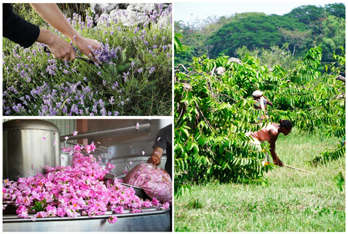

Farfalla luo uudet standardit luomukosmetiikalle
Eettisyys
Farfallan toimintaperiaatteisiin on alusta asti kuulunut reilu kauppa.He eivät osta luomuakaan halvimmalla maailmanmarkkinahinnalla, vaan pitävät viljelijöitä yhteistyökumppaneina. Farfalla sitoutuu viljelijöiden kanssa pitkiin viljelysopimuksiin, näinollen viljelijöiden toimeentulo tulee turvatuksi.
Farfalla tukee esimerkiksi naisyrittäjien toimintaa paikoissa, joissa se muuten olisi haasteellista, esim. Sisilia, Marokko ja Madagaskar. Farfalla harjoittaa myös hyväntekeväisyyttä, esim. Madagaskarilla he ovat kustantaneet paikallisille hammaslääkäriaseman. Tehtaallaan Sveitsissä Farfalla pitää huolta hyvästä työilmapiiristä.

Reilu kauppa
Farfallan toimintaperiaatteisiin on alusta asti on kuulunut tuntea tuottajat ja yhteisöt,jotka tuottavat heille reilun kaupan raaka-aineet. Raaka-aineita tuotetaan yli 40 maassa ympäri maailman. Farfalla käyttää ennakkomaksuja tukeakseen pieniä projekteja, jotka syntyvät ja kasvavat perustajiensa vilpittömistä pyrkimyksistä.Ei eläinkokeita
Farfallan tuotteita ei testata eläimillä. Farfalla ei ole ollut koskaan mukana eläinkokeissa eikä ole myöskään koskaan pyytänyt mitään muuta tahoa toimimaan puolestaan tässä asiassa.Sopii vegaaneille
Muutamaa harvaa poikkeusta lukuunottamatta Farfallan tuotteet sopivat vegaaneille. Vegaanituotteissa on Vegan
-merkintä. Farfallan tuotteita on yli 400, näistä ainoastaan 6 ei sovi vegaaneille.
Vegan
-merkintä. Farfallan tuotteita on yli 400, näistä ainoastaan 6 ei sovi vegaaneille.
0% synteettisiä aineita – 100% luonnollisista aineista
Farfallan luomukosmetiikassa käytetään tuoksuina ja vaikuttavina aineina ainoastaan luonnollisia eteerisiä öljyjä. Kun se on mahdollista, käytössä ovat sertifioidut luomulaatuiset eteeriset öljyt. Säilöntä- ja vaahdottaja-aineina käytetään yksinomaan luonnollisia aineita. Farfalla ei käytä tuotteissaan lainkaan väriaineita, sillä ne eivät lisää tuotteiden arvoa.0% silikonia, polyetyleeniglykolia (PEG), sodium laurate sulphatea, parabeeneja
Noudatamme tarkoin luomukosmetiikan valmistuksen standardeja, emmekä käytä silikonia tai polyetyleeniglykolia tuotteissamme. Nämä lisäaineet voivat säännöllisessä käytössä johtaa sekä iho- että yleisiin terveysongelmiin. Sodium laurate sulphate (SLS) ja parabeenit ovat synteettisiä vaahdottaja- ja säilöntäaineita, eivätkä Farfallan tuotteet koskaan sisällä niitä.0% mineraaliöljyjä
Mineraaliöljyt muodostavat ihon pinnalle kalvon, joka saattaa estää ihoa hengittämästä ja jopa tukkia ihohuokosia. Siksi Farfallan luomukosmetiikassa käytetään vain korkeatasoisia ja tehokkaita luomulaatuisia kasviöljyjä.Ei haitallisia reaktioita
Kaikki tuotteet ovat kliinisesti ja dermatologisesti testattuja (Dermatest) ja niille on myönnetty paras mahdollinen luokitus ”Erittäin hyvä”. Tämä tarkoittaa, etteivät tuotteet aiheuttaneet yhdellekään koehenkilölle epäsuotuisia reaktioita.Ekologiset pakkaukset
Paras suoja tuotteelle on lasinen pullo tai purkki. Siksi Farfalla markkinoi luomukosmetiikan lasisissa astioissa. Lasi voidaan myös kierrättää helposti. Osa tuotteista pakataan kierrätettävistä muoveista valmistettuihin purkkeihin.Lasipakkaukset on pakattava suojaaviin lisäpakkauksiin. Niitä käytetään myös välttämättömän informaation välittämiseen eri kielillä. Näissäkin pakkauksissa otetaan huomioon ympäristönäkökohdat: käytetty pahvi on 100% FSC -sertifioitua.